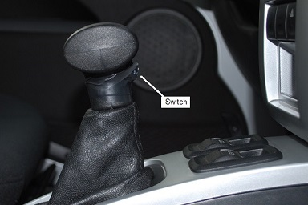
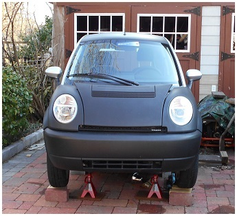
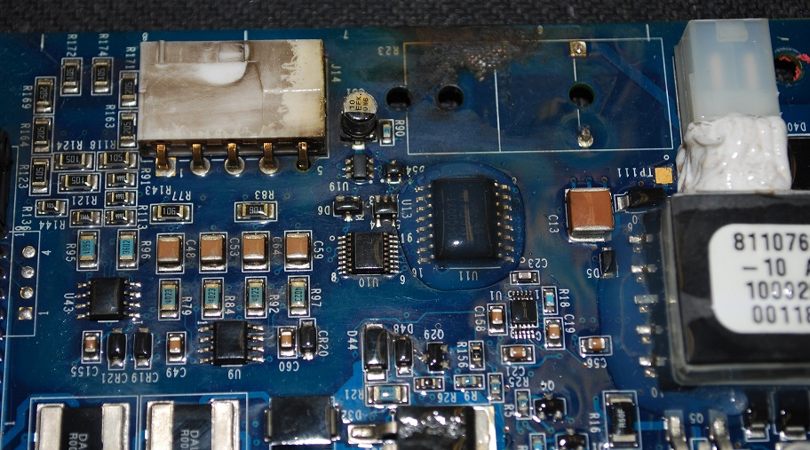
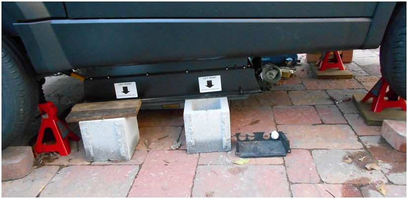
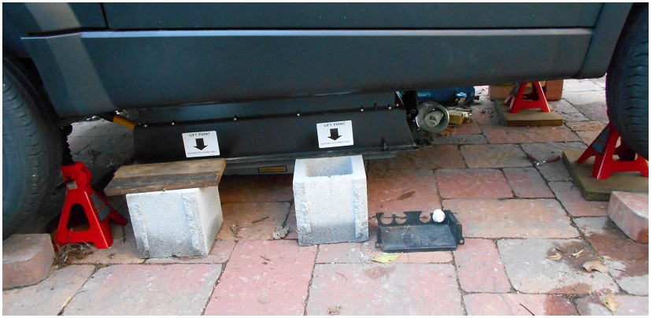
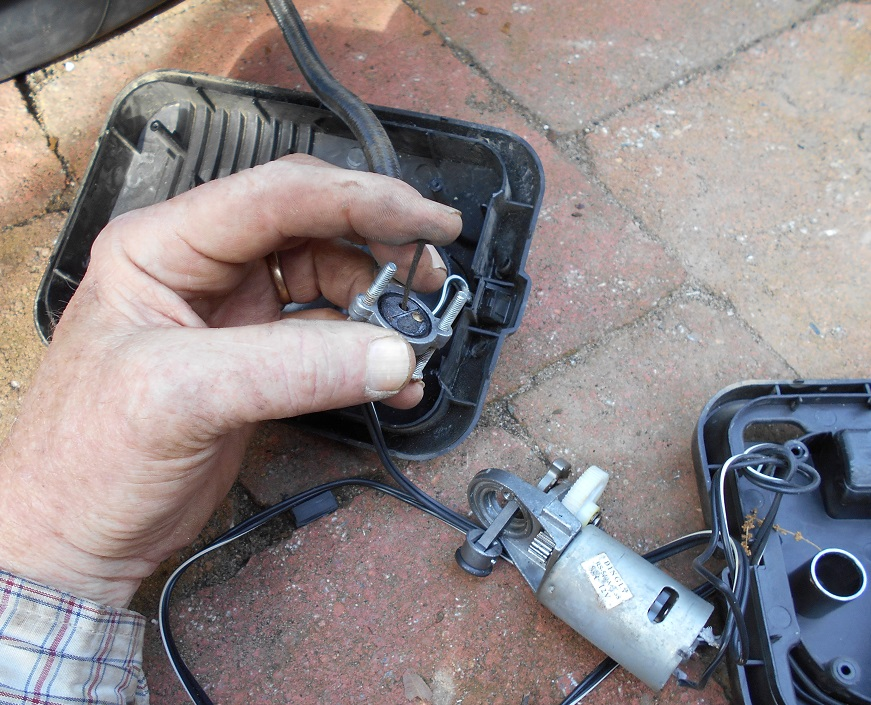
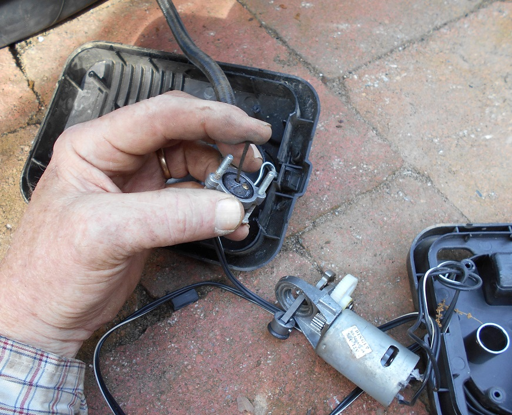

REGEN BUTTON: This is my first hack to the car to add a REGEN button. That is, to be able to Drive in D and to slow down with maximum Re-Gen in E. Looking at the table for all the conditions of the microswitches on the shift lever, one can see that both the A and C switches have to change state in going from D to E. But this can be accomplished with a single SPDT switch as shown. The new "Regen Button" is shown in its rest state. In this condition, it maintains the normal ground connection on the bottom of switch A for normal operation. It is also then Open to the top of the C switch. Thus, the switch is transparent to normal operation. But when the Shift Lever is in D, and this Button is pressed, it simultaneously opens the A circuit and closes to common the C circuit. So, I mounted a microswitch from an old mouse on the front of the Shift column with black tape so that I can simply press it when I want max regen. An analysis of what happens if I accidentally push it in any of the other gears reveals that in both Reverse and Neutral, the switch states will appear to be the same as the normal Park, except that the D switch is in an invalid state (and hopefully ignored). Similarly, in the DRIVE position, the button has the desired effect and when in the ECO position, the switch has no effect since the switches are alredy in that state. So this is a nice HACK for easy driving in D and dropping to E with the press of this convenient button for slowing down.UPDATE 2016. CHANGED TO A FAST BUTTON: Now with my second THINK, I have decided to reverse the connections to the added microswitch so that the button is no longer a REGEN Enhancer while in DRIVE, but now it is a DRIVE Enhancer while in ECO mode. I like this much better since you never know when you might need to brake suddenly, so I prefer to always drive in ECO mode to make sure that I always get MAX REGEN at any time to minimize brake wear. With the button now wired for FAST, now I can drive in ECO all the time, but when I need a quick boost (as in DRIVE), all I have to do is push the (now lableled) FAST button. Notice the wire cuts and taps now move to the other switch in the shifter so you have to take it all apart again to make this change. Notice the switch positions and logic table are very confusing. There is lots of reversee and double reverse logic. IE, a 1 is a ground, and the definitions of PUSHED or RELEASED only translate to a TRUE or NOT TRUE depending on which switch contact (NC or NO) is actually wired. So look carefully at the truth table where I added the NC and NO on each switch to show how it is wired.  Shifter Switch Photos: Mouse switch, Switch Prep, Placement, Switch view, First Screw, ABC switches, Wiring, 12V Battery Replacement Photos: Fuse mod-pigtail, Overall-view, Gel Cell battery, I had considered to wire up the added REGEN button to a relay connected to the brakelights to save me the trouble of pushing a button during panic stops. But I don't like having to move my foot to feather the brake pedal to get the extra REGEN when i touch of the finger is easier to do. Plus, all that added wiring (most of it snaking wires all over the car), makes that job a whole lot more time-cousuming... which means I probably will never find a round-. The remainder of this page replays my experience in turning this Think BRICK bought at auction and inoperable back into a nearly new great little Electric Car... Bob, WB4APR
{kind=link}
{kind=link}
{kind=link}
{kind=link}
{kind=link}
{kind=link}
{kind=link}
{kind=link}
{kind=link}
{kind=link}
{kind=link}

My THINK-brick Web Page:
After a little cleaning with alcohol and flipping the board around the other way,
it appears that the conformal coating protected almost all of the chips though,
some of their contacts may have been contacted by the 400v plazma. Which one would
assume would blow every component connected to those exposed leads.

Also notice crinkled paint, bare metal and evidence of violent activity on the metal
plate off the edge of the board. I cannot conclude that there was an arc-over-to-
ground, but simmilarly, I cannot rule it out.
Oh, lessons learned on getting the MLEC board out. First, you have to be able to
get the car up at least a foot higher than the lowest point that you can lower the
battery. I used the 1500 lb motorcycle jack from Harbor Freight shown here for the
battery and a regular hydraulic jack around the car for the frame. This
lift purports to be a parallel lift, but most of the lifting is on the rear arms
with about a 1 inch droop at the front under load at low levels, so I centered the
lift a bit forward of the battery center and used crossed lumber to spread out the
load. View below is from the front looking back with battery down about 6 inches.
The image above shows how the lips of the battery are resting on the four cinder
blocks to remove the load from the lift while the THINK brick awates its fate.
That's it for tonight. Friday 13 Mar 2015. Now to find a replacement part!
The OEM resistor is labeled: HVR APC U 2115A470K 101.V
It is a surge rated 47 ohm resistor, rated at 3.5W and 700J surge.
Here is the Manufacturer's link.
They cost about $6, but Minimum order is $50.
UPDATE: Bad news probably... Despite the total apparent destruction of the resistor
I just measured it and it is 53 ohms... pretty darn close to the original 47 ohms.
this means the arc did not quench here. Also the PCB traces are good to the white
connector (2 pins closest to the resistor) and the resistance from either of these
pins to ground is greater than 50 meghoms.
So MLEC board and resistor may be good.. something elsewhere may be my problem?
New Resistor on order ($50 minimum, so I bought a few spares).
And of course, when the MLEC board was removed, not only was the pre-charge resistor smoked, but
you can also see the arc got into the Ribbon cable rubber. This does not look good.
Apparently someone started my THINK with the heater on. Hence the constant load
through the Pre-Charge resistor and attempt to dissipate 3400 Watts into the
5 Watt resistor as shown here. This is a common failure of the THINK which was
supposed to have been corrected via a software upgrade to make sure the Heater
was off even if the dashboard switch was left on. But even with this software
protection, the failure can still occur due to the small time delay between when
the control is removed from the HV heater circuitry and when it actually drops out.
SO, if the key is rapidly turned from ON to OFF and back to ON again, and if
the heater was on, then despite the software protection, the HV heater is still
connected during the many milliseconds that it takes to cook the resistor. Notice
this vulnerable period is simply going to ON when all the contactors are doing their
thing and not actually going to START as was previously thought.

 That combined with 4 jack stands, 4 cinderblocks, several scraps of 2x10 and 4x4
posts and 2x4's and multiple-multiple jackings and re-configuring finally got to
where I got the battery down about a foot and the car WAY up there so I could remove
the MLEC board in place. You can see the panel on the right side of the front of
the battery where the MLEC panel is removed and the ribbon cable hanging out.
The panel was not trivial to get out since it has edge connectors on both top and
bottom edges of the board, neither of which will fit through the hole in the side of
the battery box SO you have to very carefully try to remove the bottom edge connectors
with your fat fingers in a tiny space (while pressing the release button on each).
Be careful removing the board and connectors as there could still possibly be 400 VDC on
the white connector if one of the HV contactors had failed and there was another ground
fault somewhere. Take care not to touch a pin or rub through the wire with all the
josstling on the edge of the metal frame.

That combined with 4 jack stands, 4 cinderblocks, several scraps of 2x10 and 4x4
posts and 2x4's and multiple-multiple jackings and re-configuring finally got to
where I got the battery down about a foot and the car WAY up there so I could remove
the MLEC board in place. You can see the panel on the right side of the front of
the battery where the MLEC panel is removed and the ribbon cable hanging out.
The panel was not trivial to get out since it has edge connectors on both top and
bottom edges of the board, neither of which will fit through the hole in the side of
the battery box SO you have to very carefully try to remove the bottom edge connectors
with your fat fingers in a tiny space (while pressing the release button on each).
Be careful removing the board and connectors as there could still possibly be 400 VDC on
the white connector if one of the HV contactors had failed and there was another ground
fault somewhere. Take care not to touch a pin or rub through the wire with all the
josstling on the edge of the metal frame.

 REPAIR: I put the new resistor on the board and
as a precaution, covered the area surrounding the
resistor with a few layers of high-temperature
Kapton tape (used extensively in Aerospace) as
shown in the image here. This way if there was
another resistor burnout and 400v Flash arc, it
would not reach the delicate electronic components.
BAD NEWS: With excitement I crawled under the car
and reconnected the repaired MLEC board to the
Battery very carefully reconecting all the
connectors (and checking the two hidden blade fuses
in the wiring harness along the lower edge.
Crawled back out and tepidly turned the car to start
.... Nothing...:-( but I did get a new indication...
the Yellow Fuel Pump looking light lit.
GOOD NEWS: Duh, I had forgotten to reconnect the
battery pack! Crawled back under the car and
plugged in the battery interface cable and large
orange battery connector. As a precaution, I
unplugged the orange HV heater plug from the PCU
under the hood and the three pin black connector
near it to make sure the heater could not cause any
problems. Crawled back out and tried again...
BAD NEWS: Still nothing. Gave up. Coverd the BRICK
with a tarp and left the car for several days.
GOOD NEWS: 9 April 2015, on a nice clean fresh sunny day, had a thought. What if the HV heater
connection is somehow interlocked and the PCU simply does not like being left exposed
with an empty connector.. Plugged in the orange plug, jumped inside and for the first
time, heard the PCU startup on "start" and going to D (drive) and the jacked-up wheels
started turning! I got a new EV! End of story.
BAD NEWS! Bought decals all over the car promoting EV's. Registered it, drove it about a month
but it went from about one shut-down fault per week, to one a day, to one per trip to one before
even leaving the neighborhood. Then it woiuld not charge, so it was Abandoned again as yard Art
to this day.
------------------- and that was it for abotu 6 months... --------------------------------------
GOOD NEWS (or not) JULY 2015: I bought another one. Talk about doubling down on a dumb investment.
But from the time I looked at it in May to when I bought it in July, to when it ws finally delivered
in December, even the THINK supplyer in Indiana has now liguidated so there is zero support anywhere.
INNER TUBE JACKING: SO this time I decided I woiuld try an easier method of getting at the
battery by jacking it down with a truck innertube. Turns out the tubes are only about $16 new
from any tire place (though special order, unless it is a truck tire place). The only one
he had in stock was not the most common tube, but it turns out it was perfect. It is about
36" in diameter. See here how I used a tire inflator to raise the car about 2" to off-weight
the battery:
REPAIR: I put the new resistor on the board and
as a precaution, covered the area surrounding the
resistor with a few layers of high-temperature
Kapton tape (used extensively in Aerospace) as
shown in the image here. This way if there was
another resistor burnout and 400v Flash arc, it
would not reach the delicate electronic components.
BAD NEWS: With excitement I crawled under the car
and reconnected the repaired MLEC board to the
Battery very carefully reconecting all the
connectors (and checking the two hidden blade fuses
in the wiring harness along the lower edge.
Crawled back out and tepidly turned the car to start
.... Nothing...:-( but I did get a new indication...
the Yellow Fuel Pump looking light lit.
GOOD NEWS: Duh, I had forgotten to reconnect the
battery pack! Crawled back under the car and
plugged in the battery interface cable and large
orange battery connector. As a precaution, I
unplugged the orange HV heater plug from the PCU
under the hood and the three pin black connector
near it to make sure the heater could not cause any
problems. Crawled back out and tried again...
BAD NEWS: Still nothing. Gave up. Coverd the BRICK
with a tarp and left the car for several days.
GOOD NEWS: 9 April 2015, on a nice clean fresh sunny day, had a thought. What if the HV heater
connection is somehow interlocked and the PCU simply does not like being left exposed
with an empty connector.. Plugged in the orange plug, jumped inside and for the first
time, heard the PCU startup on "start" and going to D (drive) and the jacked-up wheels
started turning! I got a new EV! End of story.
BAD NEWS! Bought decals all over the car promoting EV's. Registered it, drove it about a month
but it went from about one shut-down fault per week, to one a day, to one per trip to one before
even leaving the neighborhood. Then it woiuld not charge, so it was Abandoned again as yard Art
to this day.
------------------- and that was it for abotu 6 months... --------------------------------------
GOOD NEWS (or not) JULY 2015: I bought another one. Talk about doubling down on a dumb investment.
But from the time I looked at it in May to when I bought it in July, to when it ws finally delivered
in December, even the THINK supplyer in Indiana has now liguidated so there is zero support anywhere.
INNER TUBE JACKING: SO this time I decided I woiuld try an easier method of getting at the
battery by jacking it down with a truck innertube. Turns out the tubes are only about $16 new
from any tire place (though special order, unless it is a truck tire place). The only one
he had in stock was not the most common tube, but it turns out it was perfect. It is about
36" in diameter. See here how I used a tire inflator to raise the car about 2" to off-weight
the battery:
 I first removed every other battery bolt and all of the ones on the front and back. Then got to
only 4, one bolt in from each corner. Then ran the pump until the car was raised about 2" where
the tube was supporting 100% of the battery weight. Then I removed the final four bolts.

PLAN AHEAD! Of course, I had given no thought as to how I was going to lower the pressure in the
tube and had to take apart the compressor so I could poke a stick into the valve of the compressor
to let the air out! This worked well, actually, but seems kludgy. So I simply let the air out
and the battery began to descend. There was a mad scramble at the end when I realized the 700 lb
battey would crush the tube's air valve and inflator clamp when all the air was gone. SO I slipped
four blocks of 2x4 scrap under the corners of the battery to keep it a final 1.5" off the deck.
I first removed every other battery bolt and all of the ones on the front and back. Then got to
only 4, one bolt in from each corner. Then ran the pump until the car was raised about 2" where
the tube was supporting 100% of the battery weight. Then I removed the final four bolts.

PLAN AHEAD! Of course, I had given no thought as to how I was going to lower the pressure in the
tube and had to take apart the compressor so I could poke a stick into the valve of the compressor
to let the air out! This worked well, actually, but seems kludgy. So I simply let the air out
and the battery began to descend. There was a mad scramble at the end when I realized the 700 lb
battey would crush the tube's air valve and inflator clamp when all the air was gone. SO I slipped
four blocks of 2x4 scrap under the corners of the battery to keep it a final 1.5" off the deck.
 Once the battery is on the ground, then I had to begin jacking up the front end of the car so I
could get under it and disconnect the battery cables. Turns out, I had to raise the front end
over 7 inches in order for the car to clear the battery. I did this with raised wood ramps so
that I could actually move the car backwards to reveal the battery befor doing any work on it.
This is not necessary to get to the MLEC board, but I figured I'd do it anyway. So the 7" ramps
were level going back at least 6 feet so I could push the car on "level" surface. The final
picture below shows the battery revealed. What a monster.
Once the battery is on the ground, then I had to begin jacking up the front end of the car so I
could get under it and disconnect the battery cables. Turns out, I had to raise the front end
over 7 inches in order for the car to clear the battery. I did this with raised wood ramps so
that I could actually move the car backwards to reveal the battery befor doing any work on it.
This is not necessary to get to the MLEC board, but I figured I'd do it anyway. So the 7" ramps
were level going back at least 6 feet so I could push the car on "level" surface. The final
picture below shows the battery revealed. What a monster.

 At this point, I have not jacked the battery back up with the compressor, or reinstalled the battery,
but I do not anticipate any significant problems other than getting the car, on ramps, aligned so
I can then jack the car back down over the battery, and then when all is aligned, jacking up the
battery and bolting in place.
JULY 2016: That was 6 months ago. Repaired the MLEC board. Reconnected everything and the car is a winner!
But it took a long time to get the title and bill of sale) and so now a year later (July 2016)
it is finally on the road (though the local garage has still not given me my final safety
inspection document to make ti fully legal. He says the side yellow light is a clearance light
and is not working. WIll not accept the picture in the manual that says it is a turn signal
(that works). ALso, I just updated the firmware using John Meyer's portable laptop and now I
have that EV accelleration grin again!
Bob, WB4APR
Back to Top
At this point, I have not jacked the battery back up with the compressor, or reinstalled the battery,
but I do not anticipate any significant problems other than getting the car, on ramps, aligned so
I can then jack the car back down over the battery, and then when all is aligned, jacking up the
battery and bolting in place.
JULY 2016: That was 6 months ago. Repaired the MLEC board. Reconnected everything and the car is a winner!
But it took a long time to get the title and bill of sale) and so now a year later (July 2016)
it is finally on the road (though the local garage has still not given me my final safety
inspection document to make ti fully legal. He says the side yellow light is a clearance light
and is not working. WIll not accept the picture in the manual that says it is a turn signal
(that works). ALso, I just updated the firmware using John Meyer's portable laptop and now I
have that EV accelleration grin again!
Bob, WB4APR
Back to Top